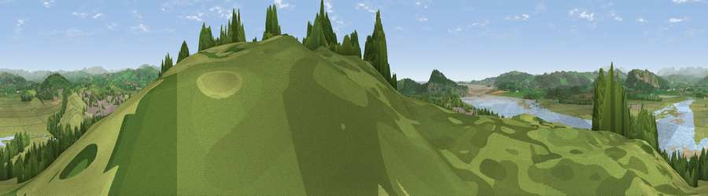

Viewpoint near Sandside
#6103 in England · top 27% of its area beats it · near SandsideThe view, rendered

A 360° render of this exact spot computed from the terrain model, tree cover and land cover — summer colours, afternoon light, calibrated against photographs of famous viewpoints. Real trees, hedges and buildings will differ in detail.
The panorama
Grey silhouette: terrain skyline in each direction (720 bearings, Earth curvature and refraction included). Dashed green: skyline with trees (+15 m) and buildings (+8 m) as obstacles. Blue strip: how far the ground is visible on each bearing.
Where the view opens
Wedge length = distance to the farthest visible ground on that bearing (vegetation-aware). Rings at 10, 25 and 50 km.
What fills the view
31% grassland · 30% built-up · 23% woodland · 13% water · 2% bare ground
Angular shares of the visible panorama (visual magnitude), not map area. Landscape diversity 0.63 (0–1 Shannon).
Key numbers
More beautiful places nearby
The staircase of upgrades: each row has a higher view potential than everything closer. Driving times are estimates from straight-line distance, calibrated against real road routing — check an actual route before setting out.
| Place | Direction | Drive | Score |
|---|---|---|---|
| Viewpoint near Arnside | SW · 4 km | ~10 min | 73.0 |
| Viewpoint near Arnside | SW · 5 km | ~10 min | 80.7 |
| Warton Crag | S · 8 km | ~16 min | 83.2 |
| Viewpoint near Grange-over-Sands | WSW · 9 km | ~18 min | 83.4 |
| Viewpoint near Finsthwaite | NW · 12 km | ~23 min | 90.3 |
| The Knoll | S · 393 km | ~377 min | 91.0 |
54.21941, -2.79303 · source: screening · position refined by local search. Computed location — check access rights before visiting.